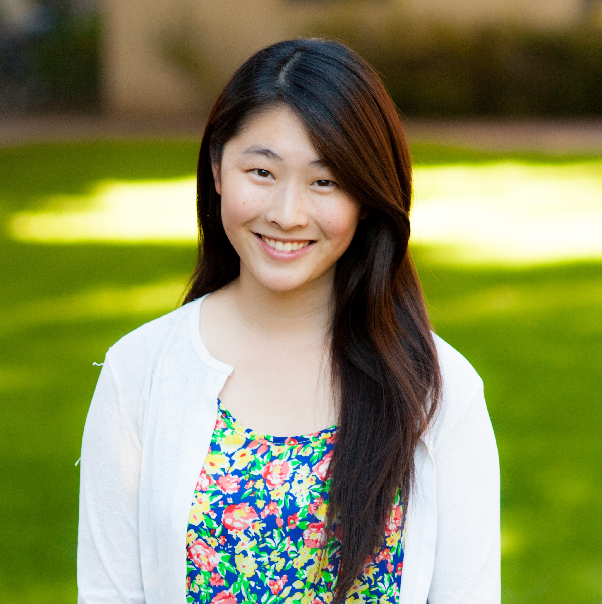
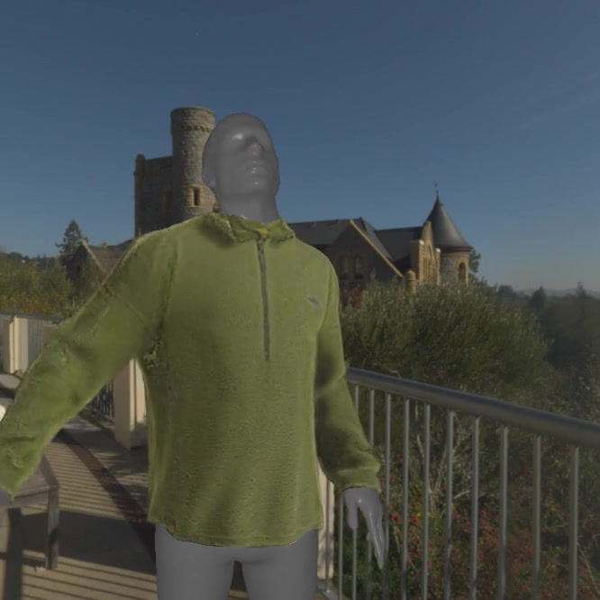
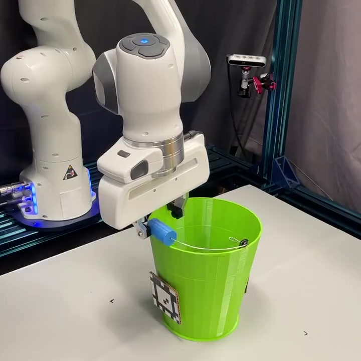
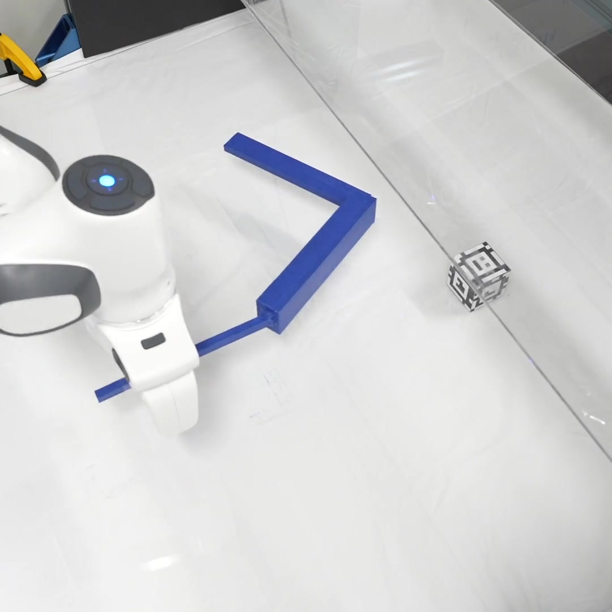
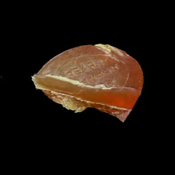

Michelle Guo
I am Michelle, a final-year PhD student in the Computer Science Department at Stanford University, where I am fortunate to be co-advised by Jiajun Wu and C. Karen Liu .
My research is graciously funded by the Meta Research Fellowship and the NSF Graduate Research Fellowship.
Previously, I received my BS and MS in Computer Science from Stanford University.
You can reach me at mguo95 [at] cs [dot] stanford [dot] edu!
CV /
Google Scholar /
Twitter /
Github /
LinkedIn

Your browser does not support the video tag.

PGC: Physics-Based Gaussian Cloth from a Single Pose
Michelle Guo ,
Matt Jen-Yuan Chiang,
Igor Santesteban,
Nikolaos Sarafianos,
Hsiao-yu Chen,
Oshri Halimi,
Aljaž Božič,
Shunsuke Saito,
Jiajun Wu,
C. Karen Liu,
Tuur Stuyck,
Egor Larionov
CVPR , 2025 (Highlight) project page
/
arXiv
Using a hybrid 3DGS + mesh representation allows reconstructing photorealistic, simulation-ready cloth from multi-view images of a static scene.
CRAFT: Designing Creative and Functional 3D Objects
Michelle Guo* ,
Mia Tang*,
Hannah Cha,
Ruohan Zhang,
C. Karen Liu,
Jiajun Wu (* equal contribution)
WACV , 2025
project page
/
arXiv
CRAFT generates 3D shapes via a mesh optimization procedure guided by semantic prompts and contact constraints.
Your browser does not support the video tag.

Learning to Design 3D Printable Adaptations on Everyday Objects for Robot Manipulation
Michelle Guo ,
Ziang Liu,
Stephen Tian,
Zhaoming Xie,
Jiajun Wu,
C. Karen Liu
ICRA , 2024
project page
Jointly learning to design and control 3D-printable object adaptions, expanding the set of objects that robots can use.
Your browser does not support the video tag.

Learning to Design and Use Tools for Robotic Manipulation
Michelle Guo , C. Karen Liu, Jiajun Wu (* equal contribution)
CoRL , 2023
project page
/
arXiv
Learning designer and controller policies that allow to robots to rapidly design, prototype, and control tools for goal-conditioned tasks.
Your browser does not support the video tag.

Learning Object-Centric Neural Scattering Functions for Free-viewpoint Relighting and Scene Composition
Michelle Guo* , Alireza Fathi, Yen-Yu Chang, Eric Ryan Chan, Ruohan Gao, Thomas Funkhouser, Jiajun Wu (* equal contribution)
TMLR , 2023
project page
/
arXiv
Making object-centric NeRFs relightable and scene-composable, for both opaque and translucent objects, by modeling neural scattering functions.
Differentiable Physics Simulation of Dynamics-Augmented Neural Objects
Michelle Guo , Taylor A Howell, Ruohan Gao, Jiajun Wu, Zachary Manchester, Mac Schwager
RA-L , 2023
arXiv
/
video
/
poster
/
slides
Making object-centric NeRFs simulation-ready, using a differentiable contact model based on the density field.
{kind=link}